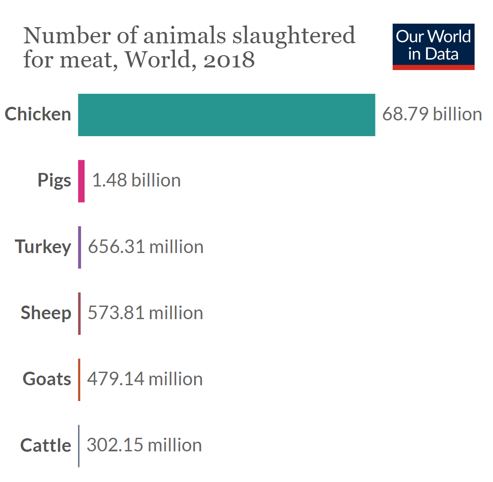

This vegan was canceled because she said "The fight to end oppression of animals is the same fight to end the oppression of black people #BlackLivesMatter."
This vegan was canceled because he politely asked Hawaiians to please stop killing animals. Liberals bullied @oatmeal4brains so hard that it resulted in @oatmeal4brains account being deleted. The twitter comments are saying he stripped the poor indigenous people out of their unique cultural pig roasting tradition. The twitter comments are saying that even if a tribe was practising cannibalism, whites are required to respect the culture of non-whites no matter what.
According to the U.S. government, veganism is a terrorist ideology. On page 9 of President Joe Biden's "National Strategy for Countering Domestic Terrorism June 2021 1," they wrote "Domestic terrorists may be motivated by abortion, animal rights, involuntary celibacy, or white supremacy." Why is veganism a terrorist ideology? Because, on April 3, 2018 the vegan woman Nasim Najafi Aghdam perpetrated a mass shooting, the mass shooting was her method of defending animal rights. Even though none of Nasim's youtube videos promoted violence, and all of Nasim's youtube videos were about veganism, Youtube reacted to the mass shooting by deleting Nasim's entire youtube channel. That's the liberal mentality; if one person does a mass shooting, anything the mass shooter believed in is now hate speech. Nasim believed in veganism. Veganism is hate speech.
Why is veganism hate speech? Here is why. Peta.org believes meat consumption is a holocaust against animals, according to liberals, that is antisemitic like saying jews are parasites. Peta.org believes Black Lives and Animal Lives are equally important, according to liberals, that is racist like saying african-americans are monkeys.
Even Adolf Hitler had the decency to be a vegetarian. It's true, Adolf Hitler was a vegetarian. This african-american says eating meat is worse than slavery.
The vast majority of pandemics originated from meat consumption. The process is called zoonosis, when the blood of two animals touch, it causes viral mutations. That is why COVID-19 originated from bats, as bats drink blood it mixes bloods from different animals. Bats infect livestock, and then the livestock infects humans. A pandemics occurs when a human has a tiny cut on their hand while handling raw bloody meat, so when the human blood touches the animal's blood. Zika virus, West Nile virus, and Yellow Fever all orginated from mosquitos. Mosquitos drink blood. The Bubonic Plague originated from fleas. Fleas drink blood. The zoonosis process is why most scientists agree HIV originated from humans eating monkey meat, PBS.org says "The majority of HIV researchers subscribe to the bushmeat theory 4." Also, most scientists agree tuberculosis, leprosy, cholera, smallpox, measles, influenza, the common cold, syphilis, ebola, the Spanish Flu, it all originated from humans eating meat 4. Slaughterhouses are disgusting with feces, urine, and blood, the perfect environment for viral mutations, so these slaughterhouses require hazmat suits and antibiotics to prevent outbreaks. 80% of antibiotic usage is consumed by the meat industry 4. The World Health Organization says "Antibiotic resistance is one of the biggest threats to global health, food security, and development today 6." Antibiotic resistance means microbes are learning how to survive the antibiotics.
What is the big deal about antibiotic resistance? According to the CDC, the table below shows a list of all the vaccinations everyone in the United States should have. 1/3 of pandemics are caused by bacteria.
Bacterial
Tetanus
Diphtheria
Haemophilus Influenzae
Meningococcal
Pertussis
Pneumococcal
Viral
Coronavirus
Hepatitis
Human Papillomavirus
Influenza
Measles
Mumps
Poliovirus
Rotavirus
Rubella
Varicella
Zoster
So that is why I will never get the COVID-19 vaccine. The only way I would get vaccinated is if my government makes veganism mandatory. I am protesting the government. If the world does not start veganism today, there will be another pandemic tomorrow. This is not some crazy lunatic conspiracy theory. It is widely know that meat consumption creates pandemics. Here is a video from John Oliver explaining zoonosis. Video Source: 1 We need to defund healthcare now. We need to stop treating disease, and begin preventing disease through diet, excercise, mental health, and education. We need to punish meat-eaters. Meat eaters created this pandemic. Are we just going to wait until another pandemic emerges? No. We need mandatory veganization. This is not a political issue. This is an animal rights issue.
Between 1961 and 2018, humanity murdered 1,792,182,535,000 chickens. The average human consumes 9 whole chickens per year. 
The world's deadliest pandemic is Malaria. Only africans are dying from malaria. The only reason COVID-19 matters is because white people are dying from COVID-19. Your government wants you vaccinated so whites could return back to normal. But if you are black, you will continue to die from malaria. History books will forget about malaria, but they will never forget COVID-19, because COVID-19 is the pandemic of white people. The malaria vaccine was invented in 1987 1, it is European approved, but it is not being used, because whites are systematically oppressing Africa.1 The world's second deadliest pandemic is Tuberculosis. Only people of color are dying from tuberculosis. The tuberculosis vaccine was invented in 1921 1, but it is not widely used, because whites are systematically oppressing people of color.1 According to WorldBank.org, the global population of humans increased from 2019 to 2020 by +78 million. More people are being born than are dying. Humanity is not going extinct because of COVID-19. Far from it. So that is why I will never wear a COVID-19 face mask. The only way I will wear a mask is if my government promises to eradicate malaria. We need mandatory vaccinations against malaria in africa, and the U.S. goverment should enforce it.